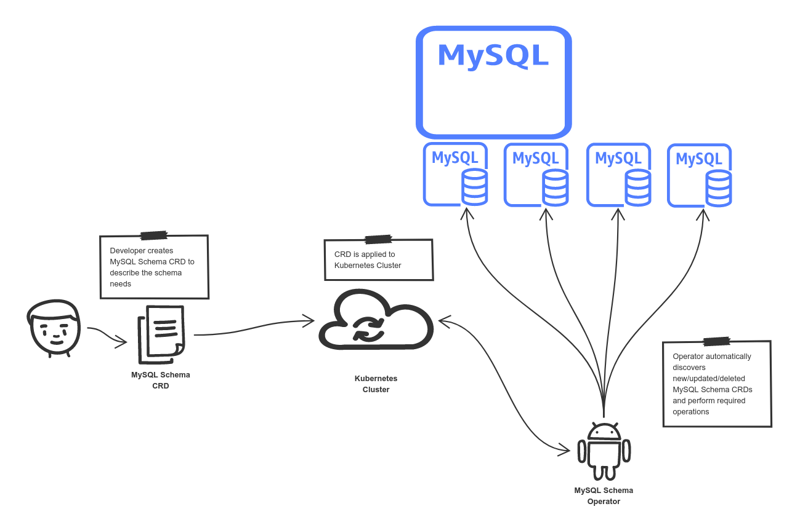
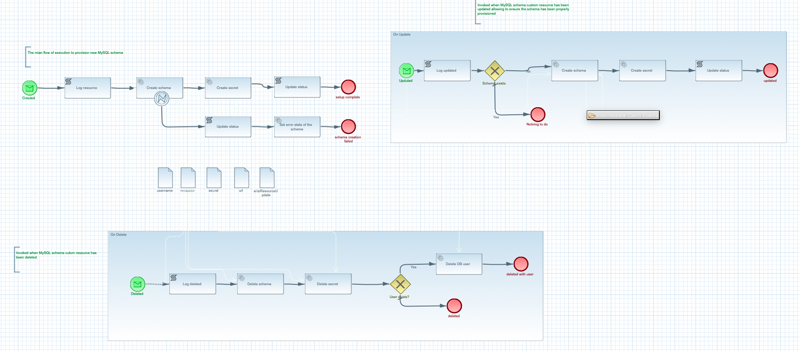
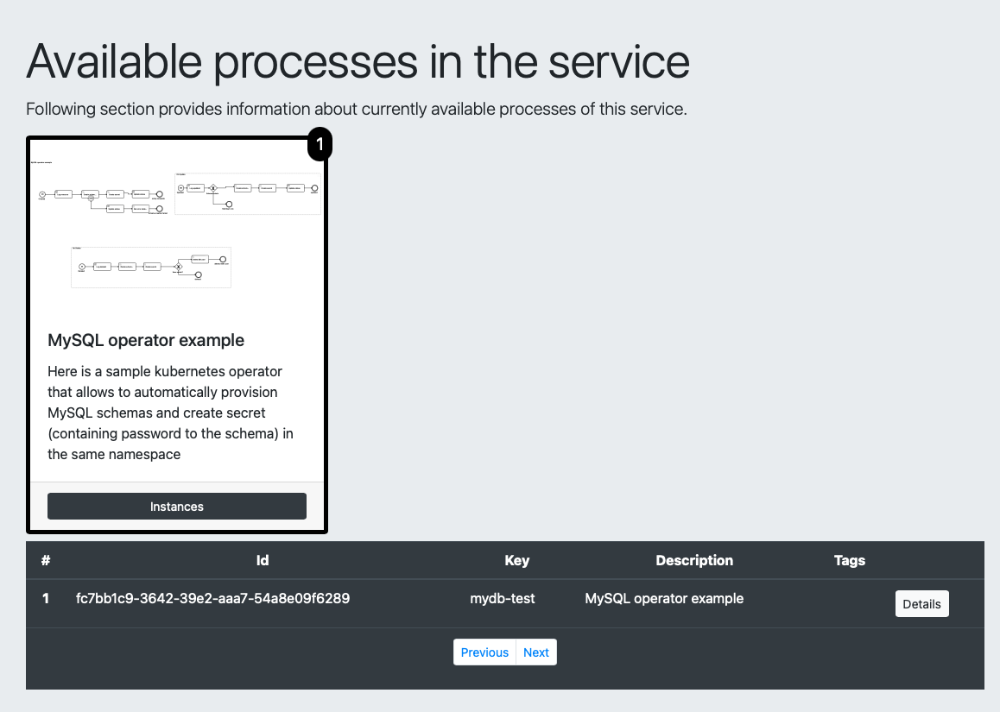
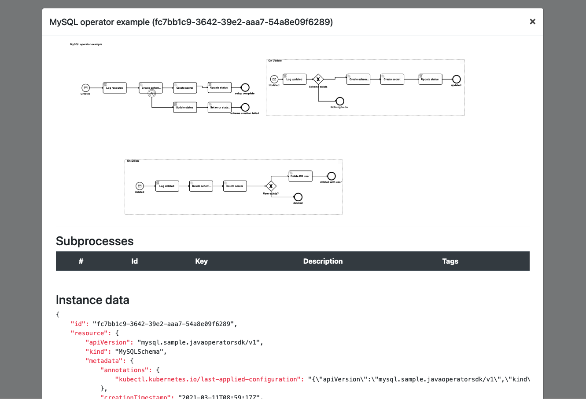

MySQL Kubernetes Operator
MySQL Kubernetes Operator example illustrates an operator use case in action. It introduces a custom
resource definition (MSQLSchema) that can be used to automatically provision MySQL schemas based on
custom resources.
This example watches a Kubernetes cluster (selected namespaces) custom resources of MySQLSchema kind. It reacts to change events
-
created
-
updates
-
deleted
At any point in time, when custom resource (of MySQLSchema kind) is modified the operator will be notified and will perform logic associated with provisioning of the schema with configuration provided as a specification of the custom resource.
Depending which change event is received different actions will be invoked.

Run it
To be able to run it a Kubernetes cluster must be available. It could be local installation, such as
-
Minikube
-
Kind
or it can be cloud based Kubernetes cluster like
-
Google Kubernetes Engine
-
OpenShift
-
Azure kubernetes Engine
-
others
Create custom resource definition for MySQLSchema
Once the Kubernetes cluster is available, let’s define our custom resource definition to the Kubernetes Cluster is aware of it.
Download the k8s descriptors from the project source code that can be found here.
kubectl apply -f k8s/crd.yaml
Here is a content of the file for quick reference
apiVersion: apiextensions.k8s.io/v1beta1
kind: CustomResourceDefinition
metadata:
name: mysqlschemas.mysql.sample.javaoperatorsdk
spec:
group: mysql.sample.javaoperatorsdk
version: v1
subresources:
status: {}
scope: Namespaced
names:
plural: mysqlschemas
singular: mysqlschema
kind: MySQLSchema
validation:
openAPIV3Schema:
type: object
properties:
spec:
type: object
required:
- encoding
properties:
encoding:
type: stringDeploy MySQL data base
Since the operator is responsible for provisioning MySQL schemas then there is a need to have MySQL data base server where these schemas will be created. For that we simply deploy the MySQL container into the Kubernetes cluster.
kubectl apply -f k8s/mysql-db.yaml
Here is a content of the file for quick reference
apiVersion: v1
kind: Namespace
metadata:
name: mysql
---
apiVersion: v1
kind: Service
metadata:
name: mysql
namespace: mysql
spec:
ports:
- port: 3306
selector:
app: mysql
type: LoadBalancer
---
apiVersion: apps/v1
kind: Deployment
metadata:
name: mysql
namespace: mysql
spec:
selector:
matchLabels:
app: mysql
strategy:
type: Recreate
template:
metadata:
labels:
app: mysql
spec:
containers:
- image: mysql:5.6
name: mysql
env:
# Use secret in real usage
- name: MYSQL_ROOT_PASSWORD
value: password
ports:
- containerPort: 3306
name: mysqlDeploy the operator
Once the custom resource definition is deployed to the cluster, the operator itself can be deployed. There are several things that needs to be done to the Kubernetes cluster to make the operator fully operational.
-
Deploy the operator container
-
Create service account for the operator
-
Create cluster role
-
Create cluster role binding
kubectl apply -f k8s/operator.yaml
Here is a content of the file for quick reference
apiVersion: v1
kind: Namespace
metadata:
name: mysql-schema
---
apiVersion: apps/v1
kind: Deployment
metadata:
name: mysql-schema-operator
namespace: mysql-schema
spec:
selector:
matchLabels:
app: mysql-schema-operator
replicas: 1 # we always run a single replica of the operator to avoid duplicate handling of events
strategy:
type: Recreate # during an upgrade the operator will shut down before the new version comes up to prevent two instances running at the same time
template:
metadata:
labels:
app: mysql-schema-operator
spec:
serviceAccount: mysql-schema-operator # specify the ServiceAccount under which's RBAC persmissions the operator will be executed under
containers:
- name: operator
image: mswiderski/mysql-operator:0.0.0-SNAPSHOT
imagePullPolicy: Always
ports:
- containerPort: 8080
env:
- name: MYSQL_HOST
value: mysql.mysql # assuming the MySQL server runs in a namespace called "mysql" on Kubernetes
- name: MYSQL_USER
value: root
- name: MYSQL_PASSWORD
value: password # sample-level security
- name: QUARKUS_LAUNCH_DEVMODE
value: 'false' # to allow deployment in development mode
---
apiVersion: v1
kind: ServiceAccount
metadata:
name: mysql-schema-operator
namespace: mysql-schema
---
apiVersion: rbac.authorization.k8s.io/v1beta1
kind: ClusterRole
metadata:
name: mysql-schema-operator
rules:
- apiGroups:
- mysql.sample.javaoperatorsdk
resources:
- mysqlschemas
verbs:
- "*"
- apiGroups:
- mysql.sample.javaoperatorsdk
resources:
- mysqlschemas/status
verbs:
- "*"
- apiGroups:
- apiextensions.k8s.io
resources:
- customresourcedefinitions
verbs:
- "get"
- "list"
- apiGroups:
- ""
resources:
- secrets
verbs:
- "*"
---
apiVersion: rbac.authorization.k8s.io/v1
kind: ClusterRoleBinding
metadata:
name: mysql-schema-operator
subjects:
- kind: ServiceAccount
name: mysql-schema-operator
namespace: mysql-schema
roleRef:
kind: ClusterRole
name: mysql-schema-operator
apiGroup: ""This descriptor contains five objects that will be created in Kubernetes cluster
-
a
mysql-schemanamespace -
deployment of the operator container image
-
service account
-
cluster role that grants the access to the api for MySQLSchema resources to be able to interact with them
-
cluter role binding to bind the service account of operator with cluster role
| A dedicated namespace is created for it so it’s easy to keep it isolated and cleaned up after use. |
Depending on the Kubernetes cluster used there might be a need for extra object to be created to expose the operator web interface to the consumers outside of the Kubernetes cluster. Following is an example for Minikube
First expose the deployment via load balancer
kubectl expose deployment mysql-schema-operator --type=LoadBalancer --port=8080 -n mysql-schema
And then open the service via minikube
minikube service mysql-schema-operator -n mysql-schema
once this is done you can see the fully described service at http://localhost:PORT/q/swagger-ui/#/
| You can open your browser http://localhost:PORT/management/processes/ui to visualize your running service |
There are multiple paths that can be taken during the operator processing a given MySQLSchema resource

The happy path
Happy path consists of steps that will lead to successful provisioning of a MySQL schema.
Try it
Follow steps in the Details section to see the happy path in action.
Create new MySQLSchema custom resource in mysql-schema namespace
kubectl apply -f k8s/schema.yaml -n mysql-schema
Here is a content of the file for quick reference
apiVersion: "mysql.sample.javaoperatorsdk/v1"
kind: MySQLSchema
metadata:
name: mydb-test
spec:
encoding: utf8This will directly trigger provisioning actual MySQL schema in the data base. In addition to that
it will also create a secret in the same namespace with name the same as custom resource - mydb-test.
At the end it will update the custom resource’s status with following information
-
status -
CREATED -
url - url to the provisioned schema
-
username - user name to be used to connect to the schema
-
secret - name of the secret that holds the password for the schema
At this point the schema is successfully provisioned and ready for use. When no loner needed it can be easily removed when the custom resource is removed from the cluster.
The operator keeps the workflow instance active as long as the associated custom resource is deployed to the Kubernetes cluster. You can look at the details of each instance by looking at the process management UI component exposed by the operator

And look at individual instance details

Lastly you can clean up the custom resource by simply removing it from the cluster
kubectl delete -f k8s/schema.yaml -n mysql-schema
This will trigger operator that will remove both db schema and user.
The error path
The error path consists of steps that lead to a failure when creating the schema and but that not provisioning it properly.
Try it
Follow steps in the Details section to see the happy archive path in action.
Create new MySQLSchema custom resource in mysql-schema namespace that has an invalid encoding.
kubectl apply -f k8s/schema.yaml -n mysql-schema
Here is a content of the file for quick reference
apiVersion: "mysql.sample.javaoperatorsdk/v1"
kind: MySQLSchema
metadata:
name: mydb-test
spec:
encoding: wrongThis will directly trigger provisioning actual MySQL schema in the data base which will fail as there
is no such encoding as wrong. It will handle error and take an alternative path to update custom
resource in the cluster with an error message. You can look at the status of the resource
kubectl describe mysqlschemas.mysql.sample.javaoperatorsdk/mydb-test -n mysql-schema
This will show a error message being set as a status
...
Spec:
Encoding: wrong
Status:
Secret Name: <nil>
Status: schema creation failure
URL: <nil>
User Name: <nil>
Events: <none>Correct the encoding in k8s/schema.yaml and apply it again
kubectl apply -f k8s/schema.yaml -n mysql-schema
This time the updated event is processed by the operator and the schema is provisioned successfully, including creation of the secret with password to the schema. You can view secrets with following command.
kubectl get secret -n mysql-schema
Lastly you can clean up the custom resource by simply removing it from the cluster
kubectl delete -f k8s/schema.yaml -n mysql-schema
This will trigger operator that will remove both db schema and user.
Source code
Complete source code of this example can be found in GitHub